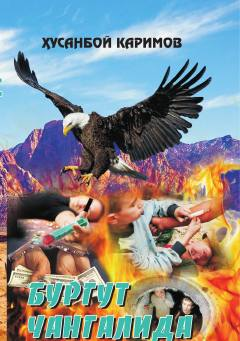

BCNarkobiznes va uyushgan jinoyatchilikka qarshi kurash haqidagi hayajonli detektiv roman.
Husanboy Karimovning ushbu detektiv romanida narkobiznes, uyushgan jinoyatchilik va tadbirkorlikdagi g'irromliklarga qarshi kurashuvchi huquqni muhofaza qiluvchi organ xodimlarining mashaqqatli faoliyati yoritilgan. Asarda zamondoshlarning halollik, vatanparvarlik hamda xiyonat yo'lidagi munosabatlari va qismatlari tasvirlangan.